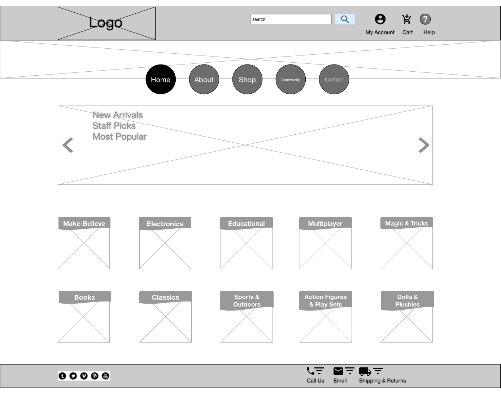

Magic Toy Shop Website Redesign
Redesigning a web presence for a decades old classic toy store.
Year: 2015
Challenge
This was the first project created with a few more tools in the toolbox. We learned more about interactive user testing, and Omnigraffle, wire framing software. We were presented with a detailed list of characteristics of the Magic Toy Shop toy store, including the company’s goals and personalities. We were also given three fully fleshed-out user personas, and asked to focus on designing to meet their needs and solve their pain points.
Approach
This was a solo project. I began by trying to fully understand the business model and how toys stores have been approached from a design standpoint. I then focused on the users, adding to my understanding of their needs to inform my design decisions.
The process was somewhat iterative, but because so much time was spent learning new technology, there wasn’t as much time to do user testing as was necessary or desirable. This lack of time illustrated what a crucial step user research and testing represent when validating steps during production and finalizing a product.
Process
Initially, I began ideating and conceptualizing through sketching and mind-mapping. Then, I conducted a comparative analysis both through examining heuristics and visually recreating site layouts. The visual comparative analysis helped me become more comfortable with the recently introduced Omnigraffle wire framing software. The analysis was purposed to determine best practices and areas for improvement in e-commerce sites, particularly relating to toy stores.
Next steps included interviewing potential users in real-life to help bolster my understanding of the pain points and motivations experienced by the offered personas. User research involved interviews, codifying those notes, and performing card sorting with volunteers. Insight gained during this process was invaluable, as was interactive user testing on wireframes in InVision. The feedback I recieved helped me better create the sort of streamlined, easy, intuitive experience online shoppers, and especially shoppers in the market and mindset for speciality goods, are seeking.


Visual Comparative Analysis
New Arrivals
Shopping Dropdown Demo
Results
The deliverables for the Magic Toy Shop redesign were complete wireframes for the website created in Omnigraffle, interactive user testing with InVision, information architecture regarding the inventory, competitive analysis, visual competitive analysis, a site map and user flows.
Contact
You can reach me through any of these methods. If you get lost, please call!
sthelmerich@live.com (704)881-2909 stacey.helmerich